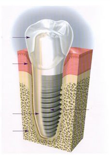
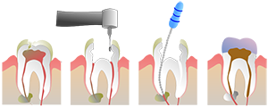

Apollo Hospital
Apollo Hospital Fortis Hospital
Fortis Hospital Artemis Hospital
Artemis Hospital Max Hospital
Max Hospital Columbia Asia Hospital
Columbia Asia Hospital Nova Hospital
Nova Hospital Medanta Hospital
Medanta Hospital


 Jaslok Hospital
Jaslok Hospital

 Global Hospitals
Global Hospitalsجراحة الأسنان في الهند بتكلفة معقولة
مرحبا ، يرجى قراءة أدناه تفاصيل حول كيفية الحصول على فوائد منخفضة التكلفة لجراحة الأسنان في الهند بمساعدة كبار جراحي الأسنان الذين يعملون مع أفضل عيادات زراعة الأسنان والمستشفيات في الهند الذين لديهم خبرة واسعة في جراحة الأسنان واسعة النطاق أداء مختلف أنواع جراحات الأسنان مثل الأسنان في ساعة ™ ، ™ الكل ™ 4 ™ الأسنان في ساعة ™ ، ابتسامة المفاجئة على ، كل التاج / الجسر الخزفي ، قشرة البورسلين ، تبييض الأسنان برايتسميل ، تبييض الأسنان بالزوم ، تبييض الأسنان بالليزر ، نوبل بيوكير، النخبة البلاتينيةموفر ، ترتيبات الأسنان المتطرفة ، نوبل أكتيف، نوبل دليل ™ ، الأسنان في الساعة ™ ، زرع يوم واحد ، ماسح ضوئي إيلوما ™ ، إيلوما ، الأقواس اللونية ، نظام اللغات الخفيفة ، المحاذاة الجديدةالواضح ، بمساعدة الأسنان في الساعة المجهر.
خطة جراحة الأسنان الخاصة بك في الهند مع الاستشاريون هيلثجورو الهندي الهندي
الجميع يحلم ابتسامة بيضاء مشرقة ومعظمنا رعاية جيدة من أسنانهم. ولكن ليس كل محظوظا في الحصول على الصورة الأسنان والكمال قد تحتاج إلى طبيب الأسنان المناسب لتماوج تلك الابتسامة رائعتين بحرية. هيلثجورو الهندي الهندي هو توفير قيمة الطبي في الهند توفير الوصول إلى أفضل أطباء الأسنان في الهند ، بأسعار معقولة.
كيف تسير الامور وظيفة في مجموعة هيلثجورو الهندي الهندي:
- مرافق رئيسية هي: هيلثجورو الهندي الهندي يساعد في ترتيب تأشيرة الطبية، جيئة وذهابا برحلات جوية والسكن والطعام، موعد مع جراح، الفحوصات المخبرية الخ
- لوحة المهرة: الهندي هيلثجورو الهندي لديها شبكة من أفضل الجراحين والمستشفيات، وتوفير الرعاية الصحية العليا في الهند .
- صديقة للميزانية: ما هي تكلفة جراحة الأسنان في الهند ؟ النفقات التي تكبدتها في السفر كله لجراحة الأسنان ما يقرب من 30٪ من التكاليف في الدول الغربية
- الاحتراف: نحافظ على أعلى الأخلاق في توفير العلاجات ويتم اتباع الإجراءات مع الشفافية.
- الخدمات الحيوية الأخرى: يأخذ مجموعتنا أيضا الرعاية من المرافق مثل تقديم وجبات صحية على النحو الذي يحدده الطبيب، والتخطيط لقضاء العطلات في الهند، تجديد، مرافق اعادة التأهيل.
تجربة المرضى الدولية
كارين كالارد
مانشستر إنجلترا
 |
مُنحت كأفضل مقدم سفر طبي - عام 2022-23 |
 |
تمت إدارة المرضى - 230 تقريبًا / كل عام |
 |
رضا المريض - 97٪ |
 |
العيادات الطبية الدولية - متوسط 5 / سنة |
 |
نهج شخصي - مدير مريض واحد لكل 5 مرضى. |
نظرة عامة
صحة الفم والعناية بالأسنان هي جزء من الرعاية الصحية وأي عطل في المنطقة يحتاج إلى توخي الحذر والتماس المشورة والعلاج المناسب لاستعادة صحة الأسنان والشخصية الرفاه. مشاكل الأسنان يمكن أن يكون من أنواع مختلفة. غالبا ما تمتلئ الأسنان مع الذهب والفضة والأسمنت، الملغم والخزف تطعيم. التهاب اللثة هو مرض اللثة خطيرة والأهم هو طب الأسنان الوقائي الذي يسأل عن الزيارة الدورية لطبيب الأسنان لعلاج الأسنان السليمة مثل تنظيف الأسنان بالفرشاة، الخيط.
ما هي جراحة الأسنان؟
جراحة الأسنان هو أي عدد من الإجراءات الطبية التي تنطوي على تعديل مصطنع الأسنان، وبعبارة أخرى جراحة الأسنان وعظام الفكين. يمكن ملء الأسنان التهاوي مع الملغم السني، مركب الأسنان والخزف الأسنان والمعادن الثمينة أو غير الثمينة. جراحة الفم والوجه والفكين هو شكل أكثر تخصصا من جراحة الأسنان.
ما هي أنواع جراحة الأسنان؟
وفيما يلي بعض الأنواع الشائعة من جراحات الأسنان أدناه:
جراحة اللبية
- قناة الجذر (استئصال السليلة المخاطية واستئصال السليلة المخاطية)
- استئصال القمة - A استئصال نهاية الجذر. أحيانا سوف قناة الجذر وحده لن يكون كافيا لتخفيف الألم ونهاية الأسنان، وتسمى قمة، سوف يتم التوقف عن تدخل من خلال اللثة وجراحيا استخراج المواد المريضة.
الأطراف الصناعية الأسنان
- كرونة (قبعات) - أغطية الاصطناعية من الأسنان المصنوعة من مجموعة متنوعة من المواد حيويا، بما في ذلك سی ایم سی / پی ایم سی(السيراميك / الخزف المعدنية المركبة)، والذهب أو خليط القصدير / الألومنيوم. يجب إعادة تشكيل الأسنان الأساسية لاستيعاب هذه الترميمات الثابتة
- القشرة - أغطية اصطناعية مماثلة إليها أعلاه، إلا أنها لا تغطي سوى الأمام (الشفة أو الشدق) سطح الأسنان. عادة لأغراض جمالية فقط.
- جسور - بدلة ثابت في والتي ترتبط اثنين أو أكثر من التيجان معا، والتي تحل محل الأسنان المفقودة أو الأسنان من خلال جسر. تستخدم عادة بعد الاستخراج.
- زراعة - وهو الإجراء الذي يتم وضع زرع التيتانيوم جراحيا في عظم (الفك السفلي أو الفك العلوي)، يسمح للشفاء، وبعد 4-6 أشهر يتم توصيل الأسنان الاصطناعية لعملية الزرع التي كتبها الأسمنت أو الاحتفاظ بها من قبل المسمار.
- أطقم الأسنان (الأسنان الاصطناعية) - مجموعة جزئية أو كاملة من الأسنان التي إما نعلق على الأسنان المجاورة عن طريق استخدام المعدن أو البلاستيك القبضات أو اللثة أو سطح فخم عن طريق استخدام لاصق.
- بدلة المدعومة زرع - مجموعة من أطقم الأسنان وزراعة، وضعت قواعد في العظام، وسمح الشفاء، ويتم إصلاح الأجهزة المعدنية على سطح اللثة، وبعد ذلك يتم وضع طقم الأسنان فوق وثابتة في مكانها.
المعالجة التقويمية
يزرع وبدلة المدعومة زرع - أيضا المعالجة التقويمية لأنه ينطوي على العظام
- استئصال القمة: أيضا علاج تقويم الأسنان كجزء من بنية العظام الكامنة يجب إزالتها.
- استخراج: إجراء يتم فيه إزالة الأسنان المريضة، زائدة عن الحاجة، أو مشكلة، إما عن طريق سحب أو الاستغناء. ويمكن أن يتم هذا الإجراء تحت التخدير الموضعي أو العام وشائع جدا. كثير من الناس لديهم أسنان حكمتهم إزالتها قبل أن تصبح مشكلة.
- بضع الألياف: إجراء بقطع الألياف حول الأسنان، ومنعه من الارتداد.
ما هي إجراءات جراحة الأسنان المشتركة؟
 زرع الأسنان:هو جذر الأسنان الاصطناعية المستخدمة في طب الأسنان لدعم الترميم التي تشبه الأسنان أو مجموعة من الأسنان. تقريبا جميع زراعة الأسنان وضعت اليوم هي الجذر شكل يزرع داخل العظم. وبعبارة أخرى، وتقريبا جميع زراعة الأسنان وضعت في القرن ال21 تظهر مشابهة لجذر السن الفعلي (وبالتالي تمتلك "الجذر شكل") وتوضع داخل العظام (النهائيين كونها البادئة اليونانية "في" وعظمي مشيرا الى "العظام"). قبل ظهور الجذور شكل يزرع داخل العظم، كانت معظم يزرع إما شفرة يزرع داخل العظم، في أن شكل القطعة المعدنية توضع داخل العظام تشبه شفرة مسطحة، أو يزرع تحت السمحاق، والذي تم بناء إطار للكذب عليها و وعلقت مع مسامير حتى العظم المكشوفة من بين فكي.
الربط الأسنان:ومن المعروف أيضا باسم الرابطة مركب أو الأسنان، هو وسيلة ممتازة لإصلاح عيوب ومستحضرات التجميل والهيكلية في الأسنان. ارتباط الأسنان يمكن أن تصلح تصدع، زميله، وتغير لونها الأسنان وكذلك محل حشوات الأملغم الفضية. يمكن الربط الأسنان أيضا إصلاح الأسنان المنحرفة، وتوفير استقامة، وابتسامة أكثر اتساقا. ويقدم العديد من الفوائد للمرضى. وهي سريعة وغير مؤلمة نسبيا، وطويلة الأمد. الرابطة الأسنان هو أيضا بديلا رائعا للعلاج طب الأسنان التجميلية أكثر اتساعا مع القشرة الخزف والجسور، والتيجان. بالإضافة إلى ذلك، الراتنج المركب المستخدم في إجراء الربط التجميل مرن جدا، وتوسيع والتعاقد مع الأسنان الطبيعية لمنع الشقوق وفقدان الأسنان. الرابطة الأسنان هو خيار ممتاز للذين يسعون لإصلاح عيوب في ابتسامة.
 جسور الأسنان:تحقيق ابتسامة تبحث واقعية الطبيعية بعد فقدان الأسنان هو ممكن مع جسور الأسنان. جسور الأسنان هي طريقة واحدة تستخدم من قبل أطباء الأسنان لملء الفجوة الناجمة عن الأسنان المفقودة (أو أسنان). اعتمادا على نوع جسر الأسنان الذي تختاره، فإن الإجراء والتكلفة تختلف. إذا كان لديك أسئلة حول جسور الأسنان، يرجى قراءة على لمزيد من المعلومات الأسنان عمل الجسر. يتكون جسر الأسنان تتألف من اثنين من التيجان الأسنان للأسنان على جانبي الفجوة والأسنان كاذبة في ما بين. الأسنان الطبيعية، زراعة الأسنان، أو مزيج من الأسنان الطبيعية وزراعة الأسنان يمكن استخدامها لدعم الجسر. معرفة المزيد حول الإجراء جسر الأسنان. سواء كنت تبحث عن حل فقدان الأسنان مؤقت أو دائم، تقدم جسور الأسنان فوائد عديدة يمكن وضعها لتحسين مظهر ووظيفة أسنانك.
جسور الأسنان:تحقيق ابتسامة تبحث واقعية الطبيعية بعد فقدان الأسنان هو ممكن مع جسور الأسنان. جسور الأسنان هي طريقة واحدة تستخدم من قبل أطباء الأسنان لملء الفجوة الناجمة عن الأسنان المفقودة (أو أسنان). اعتمادا على نوع جسر الأسنان الذي تختاره، فإن الإجراء والتكلفة تختلف. إذا كان لديك أسئلة حول جسور الأسنان، يرجى قراءة على لمزيد من المعلومات الأسنان عمل الجسر. يتكون جسر الأسنان تتألف من اثنين من التيجان الأسنان للأسنان على جانبي الفجوة والأسنان كاذبة في ما بين. الأسنان الطبيعية، زراعة الأسنان، أو مزيج من الأسنان الطبيعية وزراعة الأسنان يمكن استخدامها لدعم الجسر. معرفة المزيد حول الإجراء جسر الأسنان. سواء كنت تبحث عن حل فقدان الأسنان مؤقت أو دائم، تقدم جسور الأسنان فوائد عديدة يمكن وضعها لتحسين مظهر ووظيفة أسنانك.
الهاتف أرقام الوصول بنا-
الهند والدولية: + 91-9860755000 / + 91-9371136499
البريد الإلكتروني: contact@careandcure.us
تقويم الأسنان المعجل:هو الى حد كبير مجرد ما يبدو و اعجاب- وسيلة لتحقيق تقويم الأسنان في فترة قصيرة من الزمن. إن الشيء العظيم هو لم يكن لديك لتقديم تنازلات النتائج ابتسامتك. مع طبيب الأسنان التجميلية الصحيح، يمكنك الحصول على الشكل الذي تريد في أقصر وقت ممكن، وذلك بتكلفة معقولة. والغرض من السعي إلى طرق لتقويم الأسنان الخاصة بك ينبغي أن تذهب إلى ما هو أبعد مجرد وجود ابتسامة جميلة. استقامة أسنانك يساعد على خلق لدغة متوازنة وصحية من خلال تشجيع محاذاة الفك المناسبة. ليس ذلك فحسب، ولكن أسنان مستقيمة هي أسهل لتنظيف، مما يجعل من الصعب على البكتيريا للاختباء. تميل الأسنان التي هي ملتوية أو مزدحمة الحصول على مزيد من المشاكل مع الاضمحلال والتلف. أسنان ملتوية على أعلى لا يجوز يصطفون مع نظرائهم في القاع، والعكس بالعكس. وهذا يمكن أن يسبب عددا من المشاكل من ارتداء الأسنان تسارع إلى المضغ أو مشاكل المفصل الفكي الصدغي والمشاكل العصبية والعضلية التحدث. في كثير من الحالات، مع تلك الأسنان ملتوية قد فعلا في نهاية المطاف الإنفاق أكثر بكثير لعلاج مشاكل الأسنان المتعلقة أسنانهم ملتوية مما قد قضى لتصويب لهم.
استئصال القمة : المعروف أيضا باسم ل جراحة نهاية الجذر، هو إجراء العمليات الجراحية اللبية حيث تتم إزالة قمة الجذر الأسنان ويتم إعداد تجويف نهاية الجذر ومليئة المواد حيويا. وعادة ما استلزم ذلك عندما علاج قناة الجذر التقليدي قد فشلت وكانت إعادة المعاملة غير ناجحة بالفعل أم لا ينصح. [1] الدولة الإجراءات الفنية الاستفادة من التقنيات المجهرية، مثل المجهر التشغيل الأسنان والأدوات الصغيرة، نصائح إعداد بالموجات فوق الصوتية ومواد الحشو الكالسيوم سيليكات القائمة. يشار إزالة من طرف الجذرية لإزالة دلتا قمي كامل وضمان عدم تشريح غاب تنظيفها. لاستكمال استئصال القمة، فإن أخصائي اللبية تنظيف وختم نهاية القناة السن و. تنظيف وعادة ما يتم تحت المجهر خاص باستخدام أدوات بالموجات فوق الصوتية. الضوء والتكبير يسمح للأخصائي اللبية لرؤية المنطقة بشكل واضح. وهذا يزيد من فرصة أن هذا الإجراء سوف تنجح. وأخصائي اللبية ثم سيأخذ أشعة X من المنطقة قبل خياطة النسيج إلى مكانه مرة أخرى.
أطقم الأسنان: هي الأسنان الكاذبة التي لتحل محل الأسنان كنت قد فقدت. يمكن أن يكون طقم أسنان كامل أو جزئي. وتغطي أطقم الأسنان الكاملة الخاص بك كامل الفك العلوي أو السفلي. جزئيات محل واحد أو عدد قليل من الأسنان. حققت تقدما في مجال طب الأسنان العديد من التحسينات في أطقم الأسنان. هم أكثر طبيعية تبحث ومريحة مما كانت عليه من قبل. لكنها لا تزال قد يشعر بالغربة في البداية. في البداية، طبيب أسنانك قد أشأ أن أراك في كثير من الأحيان للتأكد من أطقم الأسنان مناسبا. مع مرور الوقت، سوف يتغير فمك وقد تحتاج إلى تعديل أو استبدال طقم الأسنان الخاص بك. تأكد من السماح طبيب أسنانك التعامل مع هذه التعديلات. التحدث والأكل قد يشعر مختلفة مع أطقم الأسنان. كن حذرا عند ارتداء طقم أسنان لأنها قد تجعل من الصعب بالنسبة لك أن تشعر الأطعمة الساخنة والسوائل. أيضا، قد لا تلاحظ أشياء مثل العظام في فمك.
القنوات الجذرية:وهو يشير إلى العملية التي طبيب أسنان يعالج الجوانب الداخلية من الأسنان، وتحديدا تلك المنطقة داخل الأسنان الذي تحتله في "نسيج اللب." معظم الناس ربما تشير إلى الأنسجة لب الأسنان كما في "العصبية". بينما الأنسجة لب الأسنان ولا تحتوي على الألياف العصبية تتكون أيضا من الشرايين والأوردة والأوعية اللمفاوية، والنسيج الضام. من المهم أن يكون علاج قناة الجذر القيام به بسرعة. فإن البكتيريا تنتقل إلى أسفل القناة إلى جذر وفي عظم الفك. إذا حدث هذا، فإن الألم من ألم في الأسنان الخاص بك ينتشر إلى الفك. والأهم من ذلك، يمكن للعدوى أن تسبب عظم الفك لتتدهور وتضعف الهيكل الذي يحمل أسنانك. أفضل طريقة لتجنب القنوات الجذرية هي لرعاية يومية جيدة لأسنانك لمنع نمو وانتشار البكتيريا. تنظيف الأسنان بالفرشاة والخيط مهمة. بنفس القدر من الأهمية هي رحلات منتظمة لطبيب الأسنان، للتحقق من أول بادرة من الاضمحلال أو الشقوق التي يمكن أن تؤدي في نهاية المطاف إلى الأسنان المصابة. في هذه الحالة، ودرهم وقاية خير من قنطار حقا من العلاج!
ما هي شروط الأسنان / اضطرابات؟
- تآكل
- مرض اللثة
- خراج الأسنان
- ألم اللثة
- إصابة الأسنان
- بخار
- الحساسية الأسنان
- الصداع
- قسط الأسنان
- الأسنان أثرت
- إنهاك
- مشاكل الفك المشتركة
- رائحة الفم الكريهة
- أطقم الأسنان فضفاضة / جزئيات
- الطفل زجاجة متلازمة
- الأسنان فضفاضة
- نزيف اللثة
- سوء الإطباق
- كسر / متكسرة الأسنان
- الصداع النصفي
- صريف الأسنان
- التهاب اللثة
- التجاويف
- إلتهاب اللثة
- الأسنان متصدع
- حساسية
- تسوس الأسنان
- الإبهام الرضيع
- مشاكل أسنان
- المفصل الفكي الصدغي (الفك المشتركة) مشاكل
- الأسنان مشوه
- اللسان التهجم
- تسوس الطفولة المبكرة
- الأسنان تلون
- حالات الطوارئ
- وجع أسنان
- التعرية
- صدمة
- التهاب اللثة
- ضرس العقل
- السن الطاحن
- "البالية" الأسنان
أفضل عيادات الأسنان في الهند
و أفضل عيادات الأسنان في الهند لديها فريق من ذوي المهارات العالية والمؤهلين من كبار أطباء الأسنان في الهند أداء كل من طب الأسنان العام لطب الأسنان التجميلي وتقويم الأسنان لتوفير جراحة الأسنان ممتازة للمرضى الدوليين.
وتقع العيادات والمستشفيات طب الأسنان في الهند في مومباي ودلهي وبيون، غوا، جايبور، شانديغار، كوتشي، تشيناي، بنغالور وحيدر أباد وناجبور، گڑگاؤں، نويدا، أحمد أباد، ولاية كيرالا، وما إلى ذلك توفير جراحة الأسنان منخفضة التكلفة لكل مريض.
ما هي التحضيرات للجراحة؟
الإعداد الجيد يساعد المرضى تشكيل موقف إيجابي حول الرعاية الصحية طب الأسنان. من الناحية المثالية، وسوف يستمر هذا الموقف في جميع مراحل الحياة، وتعزيز صحة الفم المثلى. جانب هام من جوانب إعداد المريض هو التعليم حول مخاطر وفوائد إجراءات طب الأسنان. يجب أن يفهم المريض مسبقا أسباب أي إجراء وما يمكن توقعه خلال وبعد ذلك. يجب أن يكون المريض الفرصة للالموازنة بين الايجابيات والسلبيات من أي إجراء واتخاذ قرار دراية بناء على معلومات دقيقة وصادقة، وفي الوقت المناسب. يمكن أن تمر العناية بالأسنان يكون مخيفا للأطفال وحتى الكثير من البالغين. يتم تخفيض التوتر والقلق عندما يفهم المريض أسباب الإجراءات وما يمكن توقعه. مخاطر الإجراءات يجب أيضا شرح بعناية، بحيث يمكن إجراء الموافقة المسبقة عن.
هناك حاجة إلى تثقيف المرضى في حالات:
- فوائد الأسنان، والتأمين، والخيارات المالية
- الامتحانات الأولية
- أشعة X
- إعداد ولي العهد
- تسليم التاج
- العلاج يزرع
- إعداد البطانة
- العلاج التصالحية
- قناة الجذر العلاج
- علاج اللثة
- جراحة الوجه و الفكين
ما بعد العناية التي يجب اتخاذها بعد جراحة الأسنان؟
مكالمة هاتفية من طبيب الأسنان هي الرعاية اللاحقة المشتركة، وخصوصا بعد إجراء العمليات الجراحية. طبيب الأسنان يقيم راحة المريض، يجيب على الأسئلة، وتذكر المرضى عن ما يمكن توقعه خلال الانتعاش. بروتوكول الرعاية اللاحقة جيد يبني المريض / ثقة الطبيب والثقة، ويمكن أن تساعد في الكشف عن المضاعفات الطبية قبل أن تصبح خطيرة. يجب أن يكون الانتعاش رقمك واحد للقلق بعد جراحة الأسنان . اتبع دائما التعليمات التنفيذية بعد المقدمة من الجراح او طبيب الاسنان، لمنع أي خطر العدوى أو الصدمة لموقع الجراحية. اتبع الإرشادات العامة بعد جراحة الفم لتحقيق الانتعاش السريع والشفاء الأمثل.
ما هي جراحة المسبق الأسنان؟
 الليزر علاج الأسنان: أنها تنطوي على توليد شعاع من الضوء في فمك. ضوء تمكن طبيب الأسنان الخاص بك للقضاء على المناطق المصابة بدقة. تعقيم المنطقة المتضررة، وشعاع من الضوء يغلق أيضا من الأوعية الدموية. في معظم الحالات، والمرضى الذين نادرا ما تحتاج التخدير، وهذا يعني زيارتك الأسنان تكون قصيرة نسبيا. منذ 1960s، وقد استخدمت أشعة الليزر على الأسنان واللثة وبسبب التقدم التكنولوجي، وتستخدم أشعة الليزر الآن على الصعيد العالمي. الليزر علاج الأسنان ضمان منخفضة الطاقة، وهذا يعني الجهاز لطيف على الفم. الأكثر شيوعا لإزالة الحشوات المركبة القديمة وتطهير قنوات الجذور المصابة، وأشعة الليزر يمكن أن تستخدم أيضا لتطويل التاج لتشكيل العظام وجراحة الفم والأسنان.
الليزر علاج الأسنان: أنها تنطوي على توليد شعاع من الضوء في فمك. ضوء تمكن طبيب الأسنان الخاص بك للقضاء على المناطق المصابة بدقة. تعقيم المنطقة المتضررة، وشعاع من الضوء يغلق أيضا من الأوعية الدموية. في معظم الحالات، والمرضى الذين نادرا ما تحتاج التخدير، وهذا يعني زيارتك الأسنان تكون قصيرة نسبيا. منذ 1960s، وقد استخدمت أشعة الليزر على الأسنان واللثة وبسبب التقدم التكنولوجي، وتستخدم أشعة الليزر الآن على الصعيد العالمي. الليزر علاج الأسنان ضمان منخفضة الطاقة، وهذا يعني الجهاز لطيف على الفم. الأكثر شيوعا لإزالة الحشوات المركبة القديمة وتطهير قنوات الجذور المصابة، وأشعة الليزر يمكن أن تستخدم أيضا لتطويل التاج لتشكيل العظام وجراحة الفم والأسنان.
السيد هانك ستيفن من أستراليا سهم تجربته من الحصول على جراحة الأسنان القيام به في الهند

السيد هانك ستيفن
أستراليا
لماذا تنظر الهند لجراحة الأسنان؟
وبما أن النوعية والكمية السياحة طب الأسنان في الهند آخذة في التزايد (يعتقد أن تنمو بشكل أسرع من علاج الأسنان والسياحة في تايلاند أو هنغاريا أو بولندا أو دبي أو تركيا) مع كل يوم يمر، وأطباء الأسنان الهندية الإبداعية والخبراء والمستشفيات الأسنان تنتج أفضل النتائج مع خدمات عالية الجودة. كسائح الأسنان للمرضى الحصول على صفقة رخيصة وأفضل جنبا إلى جنب على العرض في جراحة الأسنان والسياحة في الهند، بما في ذلك الإقامة في الفنادق، ورؤية البصر الخ وهكذا لدينا المزيد والمزيد من السياح الذين يزورون الهند الأسنان بثقة وارتداء ابتسامة لؤلؤية متجدد في مريح منخفضة جولة تكلفة الرعاية الصحية طب الأسنان في الهند .
عيادات الأسنان الهندية مجهزة جيدا العيادة بأحدث الأدوات والبنية التحتية. في حين أن فريق طب الأسنان يعتني النهائية لضمان التعقيم الصحيح. المعدات هي حديثة جدا وذات المعايير الدولية. للمشروع الجميلة والالتزام الذي أظهروه في القدرة على انشاء بنية تحتية الأسنان حديثة جدا حيث تتوفر كافة التسهيلات لتلبية كل ابتسامة أو طقم أسنان أفضل، إلى جانب توفير كافة الخدمات الضرورية وغيرها، والتي تدعمها بنسبة مواهبه الاستثنائية، ونتيجة صافية وأصبحت واحدة من أكثر المناطق المرغوبة للأطباء في الميدان؛ منذ عهد استخراج الأسنان وتوفير أطقم الأسنان ولت تماما انه قد كفل أن جميع الخدمات المستقبلية المتاحة.
ويزعم هؤلاء عيادات الأسنان أن تكون تلك العلاجات حيث نوعية جيدة الأسنان في الهند يمكن القيام به حصلت على أرخص تكلفة معقولة في رحلة واحدة إلى الهند. وجود عيادات الأسنان جند يمكن الاستشهاد بها في المدن التالية:
| مومباي | حيدر أباد | ولاية كيرالا |
| دلهي | بيون | غوا |
| بنغالور | ناجبور | جايبور |
| تشيناي | جورجاون | شانديغار |
ما هي تكلفة جراحة الأسنان في الهند؟

متوسط تكلفة جراحة الأسنان في الهند حوالي روبية. 40,000 ($500) ل 80,000 ($1,000)لكل غرسة. يمكن أن تختلف التكلفة حسب نوع الزرع واستخدامه والحالات الطبية الأخرى للمريض.
ارتفعت أيضًا تكلفة علاجات الأسنان في الدول الغربية. بينما قد يتم تغطية العلاجات الطبية للبعض من قبل شركات التأمين أو أرباب العمل في الدول الغربية. يجد العديد من الأجانب أنفسهم بدون أي تأمين لعلاج الأسنان وليس لديهم خيار سوى دفع تكاليف علاجات الأسنان بأنفسهم.
بالنسبة لملايين الهنود المقيمين بالخارج ، تعد علاجات الأسنان في الهند خيارًا عمليًا. احصل على عطلة مع أحبائك ووفر المال على علاج الأسنان في نفس الوقت. في حين أن معدلات عمل الأسنان تعتمد على طبيب الأسنان الذي يذهب إليه المرء. إليك عينة من التكاليف في الهند مقارنة بالولايات المتحدة.
| علاج الأسنان | التكلفة التقريبية في الولايات المتحدة الأمريكية | التكلفة التقريبية في الهند |
| قناة الجذر | $400 to $700 | $150 to $190 |
| تنظيف وتلميع | $150 to $350 | $115 to $150 |
| تنظيف وتلميع | $100 to $200 | $115 to $120 |
| الأسنان الملونة الحشوات المركبة | $3500 to $6000 | $500 to $1000 |
الهاتف أرقام الوصول بنا-
الهند والدولية: + 91-9860755000 / + 91-9371136499
البريد الإلكتروني: contact@careandcure.us
بعض الدول المشتركة من المرضى الذين يسافرون إلى الهند لإجراء عملية جراحية هي:
| الولايات المتحدة الأمريكية | المملكة المتحدة | كندا |
| أستراليا | نيوزيلاندا | نيجيريا |
| كينيا | أثيوبيا | أوغندا |
| تنزانيا | زامبيا | الكونغو |
| سيريلانكا | بنغلاديش | باكستان |
| أفغانستان | نيبال | أوزبكستان |
- هل علاج الأسنان في الهند حل ناجح وآمن وكامل للعناية بالأسنان؟
- علاج الأسنان في الهند على قدم المساواة مع المعايير الدولية. في الواقع ، يزور عدد كبير من المرضى في الخارج الهند كل عام لتلقي رعاية الأسنان ، والعدد في ازدياد.
- لماذا يجب أن تفضل جراحة الأسنان منخفضة التكلفة في الهند؟
- Tإن القدرة على تحمل تكاليف جراحة الأسنان في الهند هي مجرد ميزة إضافية. العلاج المقدم في حد ذاته يعني التفوق. تضمن رعاية الأسنان في الهند أقصى درجات رضا المريض مما يوفر جيبك.
- هل هناك طريقة يمكن للمرء أن يحصل فيها على جراحة أسنان بسعر أقل في الهند؟
- Care And Cure هي شركة سياحة طبية تساعد المرضى في الخارج على الوصول إلى أفضل الخدمات الطبية بأسعار معقولة. أرسل لنا استفسارك وتقريرك الطبي وسنقوم بالباقي.
- هل تؤلم جراحة الأسنان؟
- نظرًا لأنك ستكون تحت تأثير التخدير فلن تشعر بأي شيء أثناء الجراحة. بعد ذلك قد تشعر ببعض الانزعاج والألم ولكن طبيب الأسنان سوف يعطيك مسكنات وتعليمات حول كيفية الاعتناء بنفسك وكيفية تخفيف الألم..
- هل تحسن جراحة الأسنان في الهند مظهرك؟
- يتم إجراء جراحة الأسنان في الهند من قبل خبراء ممتازين. يزيد العلاج الجيد من نطاق تحسين ملامح وجهك وإعطاء وجهك مظهرًا أصغر سنًا.
Below are the downloadable links that will help you to plan your medical trip to India in a more organized and better way. Attached word and pdf files gives information that will help you to know India more and make your trip to India easy and memorable one.
| Click icon to Download Document | ||||||
| About India | Destinations in India | |||||
| Indian Embassy List | Medical Tourism FAQ | |||||
| Visa For India | ||||||